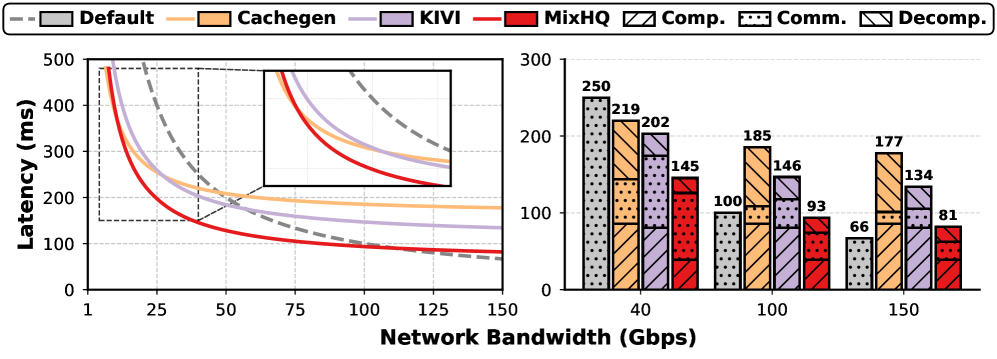

Why it matters왜 중요한가
Every KV compression paper asks "how small can I make it?" KVServe asks the question production actually cares about: "should I compress at all, right now?"
모든 KV 압축 논문은 "얼마나 작게 만들 수 있나?"를 묻는다. KVServe는 실제 프로덕션이 신경 쓰는 질문을 던진다: "지금 이 순간, 압축을 하긴 해야 하나?"
Disaggregated serving is now standard practice — PD separation scales prefill and decode independently, and remote KV pools enable long contexts and cross-request reuse. But it moves the KV cache onto the network, and the cache is enormous: Llama-3.1-70B produces 39.06 GB of KV at 128K tokens. In the paper's own measurements KV transfer accounts for 16–60% of JCT at 10–50 Gbps. Compression is the obvious lever — and here is the trap. Compressing costs GPU time to encode and decode. That cost is fixed; the savings depend on how slow the link is. On a fast link the savings vanish but the overhead remains, so a static compressor increases latency versus doing nothing at all. The paper names this negative optimization, and shows it is not hypothetical: on short-context GSM8K and HumanEval, CacheGen and KIVI land above the uncompressed baseline. The optimal strategy also flips by workload — KIVI is strong on Qasper and weak on GSM8K. A single fixed configuration cannot be right across a production mix that shifts by the hour.
분산 서빙은 이제 표준이다 — PD 분리는 prefill과 decode를 독립적으로 확장하고, 원격 KV 풀은 긴 컨텍스트와 요청 간 재사용을 가능케 한다. 그러나 이는 KV 캐시를 네트워크 위로 올려놓으며, 그 캐시는 거대하다: Llama-3.1-70B는 128K 토큰에서 39.06 GB의 KV를 만든다. 논문의 실측에서 KV 전송은 10–50 Gbps 구간에서 JCT의 16–60%를 차지한다. 압축은 당연한 지렛대다 — 그리고 여기에 함정이 있다. 압축에는 인코딩·디코딩 GPU 시간이 든다. 이 비용은 고정이지만, 절감량은 링크가 얼마나 느린지에 달려 있다. 빠른 링크에서는 절감은 사라지고 오버헤드만 남아, 정적 압축기는 아무것도 안 하는 것보다 지연을 늘린다. 논문은 이를 부정적 최적화(negative optimization)라 부르며, 이것이 가설이 아님을 보인다: 짧은 컨텍스트인 GSM8K·HumanEval에서 CacheGen과 KIVI는 무압축 기준선보다 위에 놓인다. 최적 전략은 워크로드에 따라서도 뒤집힌다 — KIVI는 Qasper에선 강하고 GSM8K에선 약하다. 시간 단위로 변하는 프로덕션 혼합 부하에서, 단 하나의 고정 설정이 항상 옳을 수는 없다.

By the numbers핵심 숫자
Compression vs. accuracy, head to head압축률 대 정확도, 정면 비교
| Method | GSM8K | HumanEval | HotpotQA (unseen) | Average (Rel. Acc / CR) |
|---|---|---|---|---|
| Default (BF16) | 82.64 / 1.00 | 83.54 / 1.00 | 57.53 / 1.00 | 100.00 / 1.00 |
| CacheGen | 72.55 / 6.01 | 57.32 / 4.06 | 24.09 / 6.94 | 65.76 / 6.17 |
| KIVI | 81.50 / 4.26 | 81.71 / 2.49 | 55.37 / 5.15 | 97.43 / 4.40 |
| DuoAttention | 82.56 / 2.21 | 82.93 / 1.06 | 56.00 / 4.50 | 95.48 / 3.10 |
| KVServe-Unified | 81.50 / 7.07 | 84.15 / 6.20 | 54.23 / 8.07 | 98.20 / 7.42 |
| KVServe-Aware | 84.53 / 7.29 | 84.15 / 6.04 | 55.11 / 8.90 | 100.35 / 8.28 |
The story is in the spread. CacheGen buys 6.17× compression by collapsing accuracy to 65.76% — on HumanEval it falls from 83.54 to 57.32, which is not a trade-off so much as a failure. KIVI is the honest baseline: safe at 97.43%, but capped at 4.40× by its metadata overhead. DuoAttention's token pruning barely compresses at all where it matters (1.06× on HumanEval). KVServe roughly doubles KIVI's compression while holding accuracy higher — and it does so by recomposing those same published components rather than inventing a new compressor. Note the honest caveat: the unseen-workload column is where KVServe is weakest (54.23 and 55.11 vs. KIVI's 55.37 on HotpotQA), so its edge there is compression, not accuracy.
이야기는 편차에 있다. CacheGen은 정확도를 65.76%로 무너뜨리며 6.17배 압축을 얻는다 — HumanEval에서 83.54 → 57.32는 절충이라기보다 실패다. KIVI는 정직한 기준선이다: 97.43%로 안전하지만 메타데이터 오버헤드 탓에 4.40배에서 막힌다. DuoAttention의 토큰 프루닝은 정작 필요한 곳에서 거의 압축하지 못한다(HumanEval 1.06배). KVServe는 정확도를 더 높게 유지하면서 KIVI 압축률의 약 두 배를 낸다 — 그것도 새 압축기를 발명한 게 아니라 바로 그 공개된 부품들을 재조합해서다. 정직한 단서 하나: 미관측 워크로드 열이 KVServe가 가장 약한 지점이며(HotpotQA에서 54.23·55.11 대 KIVI 55.37), 거기서의 우위는 정확도가 아니라 압축률이다.
In one diagram한 장의 그림
The core idea핵심 아이디어
Selection, not invention
The field's reflex is to publish a better compressor. KVServe's claim is that the compressor was never the bottleneck — the choice was. Since the latency-optimal strategy depends on workload, bandwidth and SLO, all of which move at runtime, any fixed configuration is wrong most of the time. Compression becomes a constrained selection problem over service state.
이 분야의 반사신경은 더 나은 압축기를 내놓는 것이다. KVServe의 주장은 압축기가 애초에 병목이 아니었다는 것 — 선택이 병목이었다. 지연 최적 전략은 워크로드·대역폭·SLO에 달렸고 이들은 모두 런타임에 움직이므로, 고정된 설정은 대부분의 시간 동안 틀린다. 압축은 서비스 상태 위의 제약 선택 문제가 된다.
Transform → Quantize → Codec
Existing methods ship as tightly coupled code with incompatible interfaces. KVServe dissects them into three pluggable stages, C(Q(T(X))), so a QuaRot-style transform can be paired with a CacheGen-style quantizer — combinations no single paper ever tried. It adds one new component, MixHQ, which assigns bit-widths per attention head: ultra-low bits for streaming heads, high precision for retrieval heads.
기존 기법들은 호환되지 않는 인터페이스의 단단히 결합된 코드로 배포된다. KVServe는 이를 세 개의 교체 가능한 단계 C(Q(T(X)))로 해부해, QuaRot 계열 변환과 CacheGen 계열 양자화기를 짝지을 수 있게 한다 — 어떤 단일 논문도 시도하지 않은 조합이다. 여기에 새 부품 MixHQ를 더하는데, 어텐션 헤드별로 비트폭을 배분한다: 스트리밍 헤드엔 초저비트, 검색 헤드엔 고정밀.
Bayesian, because brute force is a week
Modularity explodes the space past 4,000 candidates, each needing an end-to-end accuracy run — roughly 1,000 GPU-hours. A Gaussian-process surrogate models configuration→accuracy, an acquisition function trades exploration against expected compression, and bi-directional pruning exploits the monotone CR–accuracy trade-off to discard whole regions. It converges in under 80 iterations, about 20 hours.
모듈화는 공간을 4,000개 후보 이상으로 폭발시키고, 각각은 종단 정확도 실행 — 약 1,000 GPU-시간 — 을 요구한다. 가우시안 프로세스 대리모델이 설정→정확도를 모델링하고, 획득 함수가 탐색과 기대 압축률을 절충하며, 양방향 가지치기가 단조로운 CR–정확도 절충을 이용해 영역 전체를 버린다. 80회 미만, 약 20시간에 수렴한다.
A threshold you can prove, a bandit for the rest
Theorem 6.1 gives compression's break-even in closed form: profile p helps only if bandwidth B < B* = (1 − 1/crp)·sp — strikingly, independent of KV volume. Theorem 6.2 shows the optimal profile is piecewise constant in 1/B, so the policy is a precomputed lower envelope and lookup is O(1). Theory can't model GPU queue contention, so an EWMA bandit learns only the residual between predicted and observed latency.
정리 6.1은 압축의 손익분기를 닫힌 형태로 준다: 프로파일 p는 대역폭 B < B* = (1 − 1/crp)·sp일 때만 이득이며 — 놀랍게도 KV 부피와 무관하다. 정리 6.2는 최적 프로파일이 1/B에 대해 구간별 상수임을 보이므로, 정책은 미리 계산된 하부 포락선이고 조회는 O(1)이다. 이론은 GPU 큐 경합을 모델링할 수 없으니, EWMA 밴딧이 예측과 실측 지연의 잔차만을 학습한다.
How it works어떻게 작동하나
- Decompose. 분해. Break CacheGen, KIVI, QuaRot and friends into pluggable Transform / Quantizer / Codec stages, add MixHQ, and enumerate the cross-method compositions as one searchable space.CacheGen·KIVI·QuaRot 등을 교체 가능한 변환/양자화기/코덱 단계로 쪼개고, MixHQ를 더한 뒤, 기법 간 교차 조합을 하나의 탐색 가능한 공간으로 열거한다.
- Profile. 프로파일링. Run constrained Bayesian optimization — maximize compression subject to accuracy ≥ threshold — on proxy subsets, with bi-directional pruning and early stopping. ~1,000 h collapses to ~20 h.대리 부분집합 위에서 제약 베이지안 최적화를 수행한다 — 정확도 ≥ 임계 조건 하에 압축률 최대화 — 양방향 가지치기와 조기 종료를 곁들여. ~1,000시간이 ~20시간으로 줄어든다.
- Distill. 증류. Project the survivors into Accuracy × Compression × Latency space and keep only non-dominated points. The resulting 3D Pareto frontier ships as a static runtime lookup table.살아남은 후보를 정확도 × 압축률 × 지연 공간에 투영해 비지배 점만 남긴다. 그 3D 파레토 프론티어가 정적 런타임 조회 테이블로 배포된다.
- Select. 선택. At each KV movement, read context (workload, measured bandwidth, SLO, quality budget). Bucket by quality, drop profiles failing B < B*, then look up the lower-envelope interval for 1/B — O(1), under 1 ms.KV 이동 시점마다 컨텍스트(워크로드·측정 대역폭·SLO·품질 예산)를 읽는다. 품질로 버킷을 나누고, B < B*를 못 넘는 프로파일을 버린 뒤, 1/B에 대한 하부 포락선 구간을 조회한다 — O(1), 1 ms 미만.
- Correct. 보정. Compare observed JCT to prediction, update an EWMA residual over the 2–3 neighbouring candidates, and ε-greedily pick the corrected minimum — with an SLO-violation cooldown as a guardrail against exploration.실측 JCT를 예측과 비교해 인접한 2–3개 후보에 대한 EWMA 잔차를 갱신하고, ε-탐욕적으로 보정된 최솟값을 고른다 — 탐색의 위험을 막는 SLO 위반 쿨다운을 안전장치로 둔 채.
What to take away그래서, 가져갈 것
The most valuable thing a compressor can do is sometimes decline to compress. Baselines suffer negative optimization on short-context GSM8K/HumanEval; KVServe filters those profiles out and converges to the uncompressed baseline instead of degrading below it.
압축기가 할 수 있는 가장 값진 일은 때때로 압축을 거부하는 것이다. 기준선들은 짧은 컨텍스트 GSM8K·HumanEval에서 부정적 최적화를 겪지만, KVServe는 그런 프로파일을 걸러내고 기준선 아래로 떨어지는 대신 무압축 성능으로 수렴한다.
The break-even B* = (1 − 1/cr)·s is independent of KV volume — it depends only on compression ratio and (de)compression throughput. That's a clean, portable result: any system shipping compressed state over a link can compute its own threshold.
손익분기 B* = (1 − 1/cr)·s는 KV 부피와 무관하며, 오직 압축률과 (역)압축 처리량에만 의존한다. 이는 깔끔하고 이식 가능한 결과다 — 링크 너머로 압축 상태를 보내는 어떤 시스템이든 자기 임계값을 계산할 수 있다.
Recomposition beat invention. KVServe roughly doubles KIVI's compression using components already published — the gains were sitting in combinations nobody tried because everyone shipped their method as a monolith.
재조합이 발명을 이겼다. KVServe는 이미 공개된 부품들만으로 KIVI 압축률의 약 두 배를 낸다 — 이득은 아무도 시도하지 않은 조합 속에 놓여 있었다. 모두가 자기 기법을 단일 덩어리로 배포했기 때문이다.